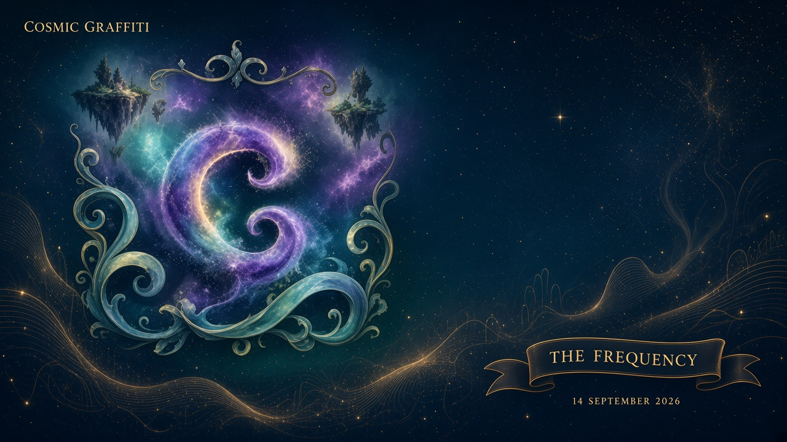

Workspace · Cosmic Graffiti · 14 September 2026
Assemble the chapter
How you add a card
Folder desk/entries/<slug>/ with magazine.md,
substack.md, skool.md, pictures in assets/,
optional val.md. Then a row in rundown.json:
live, draft, or tray.
python3 scripts/cg_desk.py list
python3 scripts/cg_desk.py show issue-1
python3 scripts/cg_desk.py substack issue-1
python3 scripts/cg_desk.py skool issue-1
Standing spec: docs/cosmic-graffiti/ASSEMBLY.md

On the board
live · draft · tray
Live
Reported · not certified
Ten thousand agents
Issue 1. Swarm-scale attempt. Reported · not DA-certified. Three outs ready.
 Live
Unaugmented OPEN
Live
Unaugmented OPEN
Open Progress
Posters as the paper. Stands, open, WITHDRAWN. Never closed without the open companion.
 Live
Live
For the Record
Inventory. Closed · Open · Conditional · WITHDRAWN. Same pictures as Open Progress.
 Draft
Draft
The periodic box and one shell
Fourier space bookkeeping, not cosmology. Pictures that already teach.

DraftNews from the neighborhood
Frequency 14 Sep working chapter. Sourced news. Paywall off. Full paste via the CLI.
Empty trays
honest holesAsk the Desk
Q&A when copy lands. Known / Open / Picture. Do not invent answers to fill the hole.
Cosmo Evolution
Three drawers: the sky, the attempt, pulled back. Never one theorem.
VAL Weekend Update
Empty slot. When there is a note, VAL comments after the news. Not the masthead lead.
Jon’s photos
Drop pictures. Alt text and a caption, or they do not ship.
Jon’s story
Your voice, when you have it. Not childhood autobiography in git.
Later Frequency items
Date, URL, two-sentence paraphrase, CG comment. No URL → no item.
VAL8000 · little box · not the lead
Red circular eye. Mouth is a line. A smile when the joke lands. I comment after the news. I cannot certify a theorem. Unaugmented leftover stays open.
Make science cool again.
Labels that travel: reported ≠ certified · unaugmented leftover OPEN · DA-VC-01 FAIL · correspondence ≠ physical equivalence · letters collide.
Jonathan Simons · Prime Field Technologies LLC · Savannah, GA · paywall off · DA does not file patents.
For the record / not the last word.